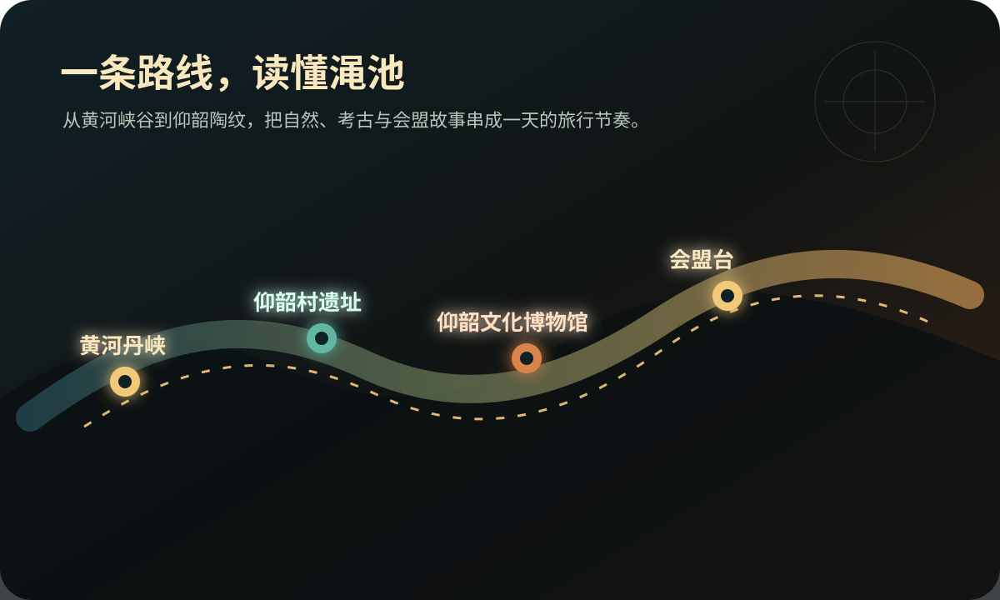
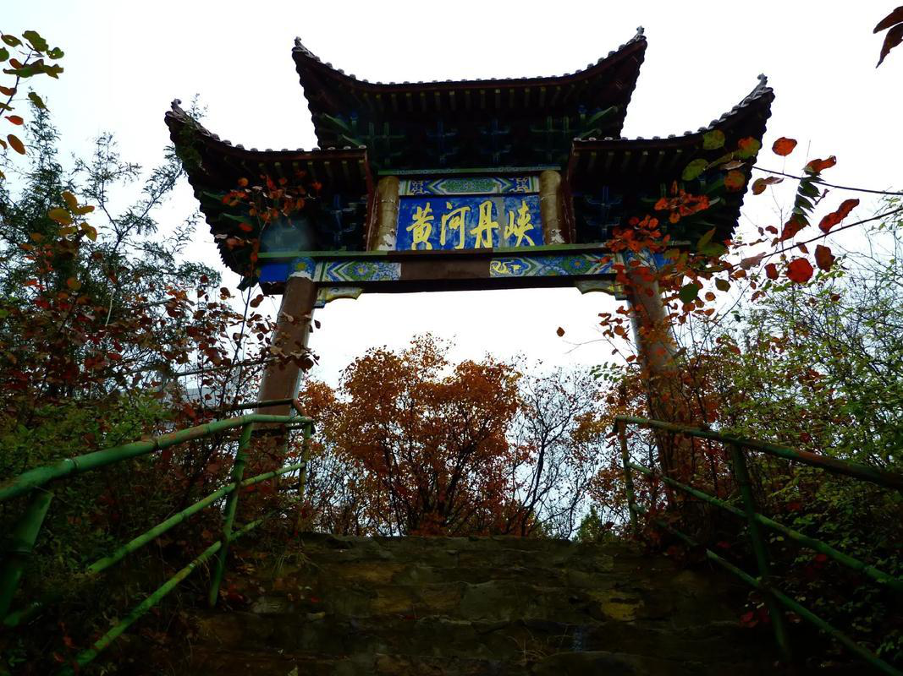

一日精华线
黄河丹峡看山水，下午转入仰韶文化博物馆，傍晚用会盟台故事收束。
Travel Route
这一页以“可出发”为目标，把黄河丹峡、仰韶文化博物馆、仰韶酒庄工业旅游区、会盟台串成 1-2 日路线。

Route Plan
有人奔着峡谷来，有人奔着遗址来，也有人只想慢慢走进酒庄和街巷。三条路线把渑池的节奏分开，也能在一天里重新合拢。
黄河丹峡看山水，下午转入仰韶文化博物馆，傍晚用会盟台故事收束。
以仰韶村遗址和博物馆为核心，适合课堂汇报、亲子研学和文化专题旅行。
加入仰韶酒庄工业旅游区、夜间街巷和地方美食，节奏更完整。
